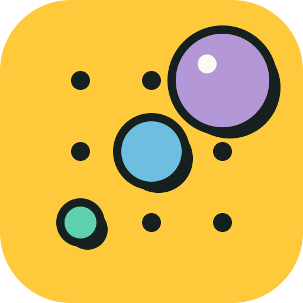

Session 3
Sunday, November 22 · 7–9 a.m. PT / 10 a.m.–noon ET
Visible Java · A CC Fest learning studio

7:00 PT
Loose ends, then work from the group.
7:30 PT
Session 2’s light, rebuilt from objects.
8:00 PT
Many objects with Joshua Hans.
8:30 PT
The artist behind Praystation, then close.
Tell us your name and what you teach.
The recap and recording are on the site.
A draw() loop and a first if.
A traffic light that only knew red, then a car that obeys it.
// red
if (state.equals("red")) {
fill(230, 40, 40);
} else {
fill(90, 30, 30);
}
ellipse(510, 55, 50, 50);
// yellow
if (state.equals("yellow")) {
fill(250, 210, 40);
} else {
fill(90, 80, 20);
}
ellipse(510, 115, 50, 50);
// green: the same again
From the debrief
The same code, three times.
Only the numbers change: a center, a bright color, a dull color.
A class is the plan, written once. Each object made with new gets its own fields.
| When | AP CS A | Ideas |
|---|---|---|
| Session 1 | Unit 1 | Variables, methods, arguments, integer division |
| Session 2 | Unit 2 | Boolean expressions, if and else |
| Today | Unit 3 | Writing classes: fields, constructors, methods, getters and setters |
| Later | Unit 4 | Collections of data and objects |
Objects deserve more than one session. If they click for you, go deeper on your own.
class Light {
String name;
int x;
int y;
int onRed, onGreen, onBlue;
int offRed, offGreen, offBlue;
void display(String state) {
stroke(0);
if (state.equals(name)) {
fill(onRed, onGreen, onBlue);
} else {
fill(offRed, offGreen, offBlue);
}
ellipse(x, y, 50, 50);
}
}
Step 1
// In draw(): ask the lights, tell the car.
if (green.isOn()) {
car.setSpeed(3);
} else if (yellow.isOn()) {
car.setSpeed(1);
} else {
car.setSpeed(0);
}
car.move();
Step 2
Step 2 · the whole loop
· car:
class Light {
private int x;
private int y;
private boolean on;
// also r, g, b, display(), contains()
public boolean isOn() {
return on;
}
public void setOn(boolean on) {
this.on = on;
}
}
isOn() asks and changes nothing. Naming a boolean getter is… is a convention, not a rule.
setOn() changes one field and returns nothing.
Only the class itself should touch its fields.
Predict
public void setup() {
green.on = true;
}
It compiles. Processing puts every class inside the sketch, and Java lets the outer class reach the private fields of a class nested in it.
Pickcode too, when the class is in Sketch.java.
on has private access in Light
Move Light to its own .java file, and the compiler stops you.
In a sketch, private is a promise you keep. In a separate class, the compiler keeps it for you.
isRequested() and green → green ends
isRequested(), red, and carIsClear → WALK, and the person starts
isWalk() and not isCrossing() → back to WAIT
which light isOn() → the car’s speed
The objects never talk to each other. Each frame, draw() asks one with a getter and tells another with a setter.
Green, the car just past the stop line, and someone pushes. What happens, in order?
Step 3
Three lights only show so much.
Confetti with Joshua Hans
Pieces that touch each other do something.
Who touched whom?
Use lerp() instead of a jagged random walk.
Instead of confetti, what would you make?
Our guest today
Artist and designer, and the person behind Praystation. He makes generative art in Processing with HYPE, an open-source library built from objects.
Bring your questions, out loud or in the chat.
Try one challenge, or your own context.
Want more objects? The ball on the Session 3 page adds references and a first array.
No meeting on November 29, Thanksgiving weekend.
Post a screenshot or code in Google Classroom if you want feedback.
Session 4: Sunday, December 6
0:00